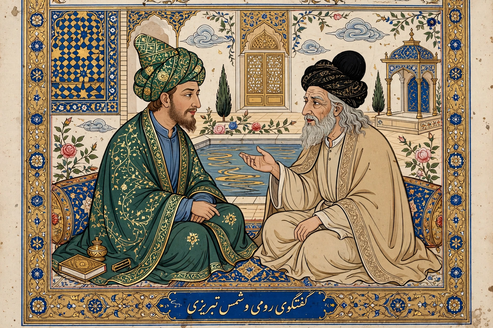

From Wikipedia, the free encyclopedia
| Rumi | |
|---|---|
| Born | 30 September 1207, Balkh (or Wakhsh) |
| Died | 17 December 1273, Konya, Seljuk Sultanate of Rum |
| Known for | Masnavi; Divan of Shams; founder-figure of the Mevlevi Sufi order |
| Also known as | Jalal ad-Din Muhammad Rumi; Mevlana |

Jalāl ad-Dīn Muhammad Rūmī (1207–1273), known simply as Rumi, was a Persian Sufi mystic and poet whose works are among the most beloved in world literature. His six-volume Masnavi — didactic stories in rhyming couplets exploring divine love — has been called 'the Quran in Persian', and his lyrical Divan, dedicated to his transformative friend Shams Tabrizi, made him, in modern translation (notably Coleman Barks's versions), reputedly the best-selling poet in the United States.
Born in Balkh, Rumi migrated with his family across the Muslim world ahead of the Mongol invasions, settling in Konya. A respected scholar-teacher, he was transformed in 1244 by meeting the wandering dervish Shams Tabrizi; Shams's disappearance (and presumed murder) plunged Rumi into grief and poetry. After his death his son Sultan Walad organised the Mevlevi order, the 'whirling dervishes'. His shrine in Konya remains a place of pilgrimage; his funeral was attended by mourners of every faith in the city.